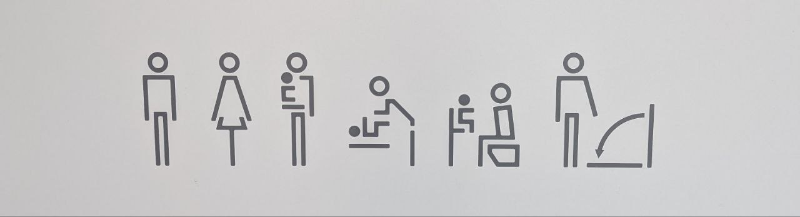

-Aquarius,Pocari Sweat and Onigiri’s I ate from konbini



On July 1, 2025, while spending the summer in Tokyo, I set out on a
“walk” : visiting the Tokyo Toilet
project sites across the city. Inspired by the film Perfect Days, I
left my hotel room at 8 a.m. and began my journey on foot.This is simply
a documentation of the photos I took along the way.
Honarable mentions
-Aquarius,Pocari Sweat and Onigiri’s I ate
from konbini
1.Sasazuka
Greenway.1-29 Sasazuka, Shibuya

3.Nanago Dori
Park. 2-53-5 Hatagaya


4.Nishihara
Itchome Park. 1-29-1 Nishihara


6.Yoyogi-Hachiman.5-1-2
Yoyogi


7.Haru-no-Ogawa
Community Park. 5-68-1 Yoyogi

8.Yoyogi
Fukamachi Mini Park. 1-54-1 Tomigaya


11.Jingu-Dori
Park. 6-22-8 Jingumae

12.Nabeshima
Shoto Park. 2-10-7 Shoto


13.Higashi
Sanchome. 3-27-1 Higashi


14.Ebisu Park.
1-19-1 Ebisu-Nishi

15.Ebisu Station,
West Exit. 1-5-8 Ebisu-Minami


16.Ebisu East
Park. 1-2-16 Ebisu
17.Hiroo Higashi Park. 4-2-27 Hiroo